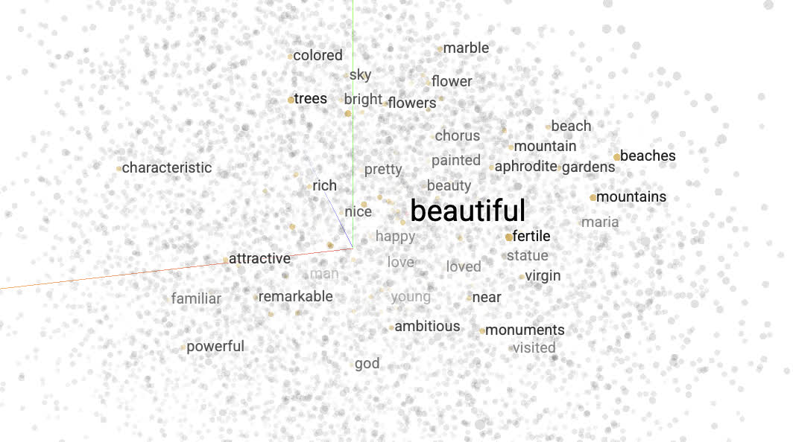
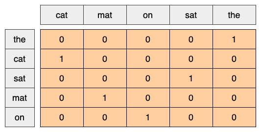
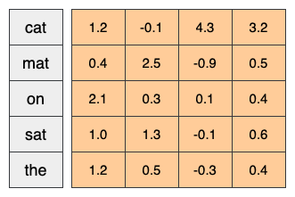

4.2 Word Embeddings
Train own word embeddings for a sentiment classification task!
Created Date: 2025-05-17
This tutorial contains an introduction to word embeddings. we will train own word embeddings for a sentiment classification task, and then visualize them in the Embedding Projector (shown in the image below).

4.2.1 Representing Text as Numbers
Machine learning models take vectors (arrays of numbers) as input. When working with text, the first thing you must do is come up with a strategy to convert strings to numbers (or to "vectorize" the text) before feeding it to the model. In this section, you will look at three strategies for doing so.
4.2.1.1 One-hot Encodings
As a first idea, you might "one-hot" encode each word in your vocabulary, previous section 4.1 RNN from Stratch using it. Consider the sentence "The cat sat on the mat". The vocabulary (or unique words) in this sentence is (cat, mat, on, sat, the). To represent each word, you will create a zero vector with length equal to the vocabulary, then place a one in the index that corresponds to the word. This approach is shown in the following diagram.

To create a vector that contains the encoding of the sentence, you could then concatenate the one-hot vectors for each word.
Key Point: This approach is inefficient. A one-hot encoded vector is sparse (meaning, most indices are zero). Imagine you have 10,000 words in the vocabulary. To one-hot encode each word, you would create a vector where 99.99% of the elements are zero.
4.2.1.2 Unique Number
A second approach you might try is to encode each word using a unique number. Continuing the example above, you could assign 1 to "cat", 2 to "mat", and so on. You could then encode the sentence "The cat sat on the mat" as a dense vector like [5, 1, 4, 3, 5, 2]. This approach is efficient. Instead of a sparse vector, you now have a dense one (where all elements are full).
There are two downsides to this approach, however:
The integer-encoding is arbitrary (it does not capture any relationship between words).
An integer-encoding can be challenging for a model to interpret. A linear classifier, for example, learns a single weight for each feature. Because there is no relationship between the similarity of any two words and the similarity of their encodings, this feature-weight combination is not meaningful.
4.2.1.3 Word Embeddings
Word embeddings give us a way to use an efficient, dense representation in which similar words have a similar encoding.Importantly, you do not have to specify this encoding by hand. An embedding is a dense vector of floating point values (the length of the vector is a parameter you specify). Instead of specifying the values for the embedding manually, they are trainable parameters (weights learned by the model during training, in the same way a model learns weights for a dense layer).
It is common to see word embeddings that are 8-dimensional (for small datasets), up to 1024-dimensions when working with large datasets. A higher dimensional embedding can capture fine-grained relationships between words, but takes more data to learn.

Above is a diagram for a word embedding. Each word is represented as a 4-dimensional vector of floating point values. Another way to think of an embedding is as "lookup table". After these weights have been learned, you can encode each word by looking up the dense vector it corresponds to in the table.
4.2.2 IMDb Dataset
We will use the Large Movie Review Dataset through the tutorial, and will train a sentiment classifier model on this dataset and in the process learn embeddings from scratch. To read more about loading a dataset from scratch, see the section 1.3.2 Text - Data Representation.
Download the dataset and take a look at the directories.
from common import imdb_text
dataset_dir = imdb_text.get_dataset_dir()
print(os.listdir(dataset_dir))Successfully extracted to: ./data/aclImdb ['imdbEr.txt', 'test', 'imdb.vocab', 'README', 'train']
Take a look at the train/ directory. It has pos and neg folders with movie reviews labelled as positive and negative respectively. You will use reviews from pos and neg folders to train a binary classification model.
train_dir = os.path.join(dataset_dir, 'train')
print(os.listdir(train_dir))['urls_unsup.txt', 'neg', 'urls_pos.txt', 'unsup', 'urls_neg.txt', 'pos', 'unsupBow.feat', 'labeledBow.feat']
The train directory also has additional folders which should be removed before creating training dataset.
remove_dir = os.path.join(train_dir, 'unsup')
shutil.rmtree(remove_dir)4.2.3 Embedding Layer
The Embedding layer can be understood as a lookup table that maps from integer indices (which stand for specific words) to dense vectors (their embeddings). The dimensionality (or width) of the embedding is a parameter you can experiment with to see what works well for your problem, much in the same way you would experiment with the number of neurons in a Dense layer.
# Embed a 1000 word vocabulary into 5 dimensions.
simple_embedding_layer = torch.nn.Embedding(num_embeddings=1000,
embedding_dim=5)When you create an Embedding layer, the weights for the embedding are randomly initialized (just like any other layer). During training, they are gradually adjusted via backpropagation. Once trained, the learned word embeddings will roughly encode similarities between words (as they were learned for the specific problem your model is trained on).
If you pass an integer to an embedding layer, the result replaces each integer with the vector from the embedding table:
result = simple_embedding_layer(torch.tensor([1, 2, 3]))
print(result)tensor([[ 0.7725, -1.1844, -2.5558, -0.5727, 0.3379],
[-0.1080, -0.9385, 0.0624, 0.5128, 0.8134],
[-0.7676, 0.4160, 0.9115, 0.1926, 0.0960]],
grad_fn=<EmbeddingBackward0>)
The \([1000, 5]\) shape refers to the internal embedding matrix of the layer — you can think of it like a dictionary, where each row represents the embedding vector of a word.
The input \([1, 2, 3]\) is a list of token IDs. PyTorch's Embedding layer simply looks up rows 1, 2, and 3 from that matrix.
embedding_matrix = torch.randn(1000, 5)
result = embedding_matrix[[1, 2, 3]]
assert result.shape == (3, 5)For text or sequence problems, the Embedding layer takes a 2D tensor of integers, of shape (samples, sequence_length), where each entry is a sequence of integers. It can embed sequences of variable lengths. You could feed into the embedding layer above batches with shapes \((32, 10)\) (batch of 32 sequences of length 10) or \((64, 15)\) (batch of 64 sequences of length 15).
The returned tensor has one more axis than the input, the embedding vectors are aligned along the new last axis. Pass it a \((2, 3)\) input batch and the output is \((2, 3, N)\).
result = simple_embedding_layer(torch.tensor([[0, 1, 2], [3, 4, 5]]))
assert result.shape == (2, 3, 5)When given a batch of sequences as input, an embedding layer returns a 3D floating point tensor, of shape (samples, sequence_length, embedding_dimensionality). To convert from this sequence of variable length to a fixed representation there are a variety of standard approaches. You could use an RNN, Attention, or pooling layer before passing it to a Dense layer. This tutorial uses pooling because it's the simplest.
4.2.4 Preprocessing
Next, define the dataset preprocessing steps required for your sentiment classification model.
def load_imdb_data(data_dir):
data = []
for label_type in ["pos", "neg"]:
dir_path = os.path.join(data_dir, label_type)
label = 1 if label_type == "pos" else 0
for fname in os.listdir(dir_path):
if fname.endswith(".txt"):
with open(os.path.join(dir_path, fname), encoding="utf-8") as f:
text = f.read()
data.append((text, label))
return data
train_data = load_imdb_data(train_dir)
def custom_standardization(text):
text = text.lower()
text = re.sub(r"<br\s*/?>", " ", text) # replace <br /> or <br> with space
text = re.sub(r"[%s]" % re.escape(string.punctuation), "", text)
return text
def tokenize(text):
# Tokenizer function (simple whitespace tokenizer)
return custom_standardization(text).split()
assert tokenize("Hello, world!") == ["hello", "world"]yield_tokens that takes an iterable of text-label pairs and yields a list of tokens for each text sample by applying a tokenize function. It then creates a Counter object to count the frequency of each token across the dataset.
By iterating through the tokens yielded from train_data, it updates the counter with the frequency of each word. After processing the entire dataset, the code extracts the 1000 most common tokens and prints the top five to give a preview of the vocabulary.
Finally, it constructs a dictionary called word_to_index that maps each of these frequent words to a unique index, starting from 2. Special tokens
def yield_tokens(data_iter):
for text, _ in data_iter:
yield tokenize(text)
counter = collections.Counter()
for tokens in yield_tokens(train_data):
counter.update(tokens)
vocab = counter.most_common(1000)
print(vocab[:5])
word_to_index = {word: idx + 2 for idx, (word, _) in enumerate(vocab)}
word_to_index[""] = 0
word_to_index[""] = 1 [('the', 334719), ('and', 162255), ('a', 161967), ('of', 145376), ('to', 135111)]
The IMDBDataset class extends PyTorch’s Dataset and is used to convert raw IMDB review data into tensor format suitable for model training
class IMDBDataset(torch.utils.data.Dataset):
def __init__(self, data, word_to_index):
self.data = data
self.word_to_index = word_to_index
def __len__(self):
return len(self.data)
def __getitem__(self, idx):
text, label = self.data[idx]
text_idx = [
self.word_to_index.get(word, self.word_to_index[""])
for word in tokenize(text)
]
return torch.tensor(text_idx), torch.tensor(label)
train_dataset = IMDBDataset(train_data, word_to_index)
print(train_dataset[0]) The collate_fn function is designed to prepare mini-batches from the IMDB dataset where each text sample may have a different length. When the DataLoader collects multiple samples into a batch, it passes them to collate_fn.
def collate_fn(batch):
texts, labels = zip(*batch)
max_len = max(len(text) for text in texts)
padded_texts = [
torch.cat(
[text, torch.tensor([word_to_index[""]] * (max_len - len(text)))]
)
for text in texts
]
padded_texts_tensor = torch.stack(padded_texts).long()
labels_tensor = torch.tensor(labels).long()
return padded_texts_tensor, labels_tensor
train_loader = torch.utils.data.DataLoader(
train_dataset, batch_size=32, shuffle=True, collate_fn=collate_fn
) 4.2.5 Classification model
Use the PyTorch Sequential API to define the sentiment classification model. In this case it is a "Continuous bag of words" style model:
class TextClassificationModel(torch.nn.Module):
def __init__(self, vocab_size, embedding_dim):
super(TextClassificationModel, self).__init__()
self.embedding = torch.nn.Embedding(vocab_size, embedding_dim)
self.pool = torch.nn.AdaptiveAvgPool1d(1)
self.fc1 = torch.nn.Linear(embedding_dim, 16)
self.fc2 = torch.nn.Linear(16, 1)
def forward(self, x):
x = self.embedding(x)
# [batch_size, embedding_dim, seq_len]
x = x.permute(0, 2, 1)
x = self.pool(x)
# [batch_size, embedding_dim]
x = x.squeeze(-1)
x = torch.relu(self.fc1(x))
x = self.fc2(x)
return xThe
Embeddinglayer takes the integer-encoded vocabulary and looks up the embedding vector for each word-index. These vectors are learned as the model trains. The vectors add a dimension to the output array. The resulting dimensions are:(batch, sequence, embedding).The
AdaptiveAvgPool1dlayer returns a fixed-length output vector for each example by averaging over the sequence dimension. This allows the model to handle input of variable length, in the simplest way possible.The fixed-length output vector is piped through a fully-connected (Dense) layer with 16 hidden units.
The last layer is densely connected with a single output node.
Compile and train the model using the Adam optimizer and BinaryCrossentropy loss.
embedding_dim = 16
vocab_size = len(word_to_index)
model = TextClassificationModel(vocab_size, embedding_dim)
criterion = torch.nn.BCEWithLogitsLoss()
optimizer = torch.optim.Adam(model.parameters(), lr=0.001)
num_epochs = 10
for epoch in range(num_epochs):
model.train()
total_loss = 0
for texts, labels in train_loader:
outputs = model(texts)
loss = criterion(outputs.squeeze(), labels.float())
optimizer.zero_grad()
loss.backward()
optimizer.step()
total_loss += loss.item()
print(f"Epoch {epoch+1}/{num_epochs}, Loss: {total_loss/len(train_loader):.4f}")Epoch 1/10, Loss: 0.6873 Epoch 2/10, Loss: 0.6001 Epoch 3/10, Loss: 0.4751 Epoch 4/10, Loss: 0.4149 Epoch 5/10, Loss: 0.3862 Epoch 6/10, Loss: 0.3670 Epoch 7/10, Loss: 0.3523 Epoch 8/10, Loss: 0.3420 Epoch 9/10, Loss: 0.3325 Epoch 10/10, Loss: 0.3269
Retrieve the word embeddings learned during training. The embeddings are weights of the Embedding layer in the model. The weights matrix is of shape (vocab_size, embedding_dimension).
Obtain the weights from the model:
embedding_weights = model.embedding.weight.data.cpu().numpy()Write the weights to disk. To use the Embedding Projector, you will upload two files in tab separated format: a file of vectors (containing the embedding), and a file of meta data (containing the words).
numpy.savetxt("temp/embedding_vectors.tsv", embedding_weights, delimiter="\t")
with open("temp/embedding_labels.tsv", "w") as f:
for word in word_to_index:
f.write(f"{word}\n")To visualize the embeddings, upload them to the embedding projector. Open the Embedding Projector:
Click on "Load data".
Upload the two files you created above: embedding_vectors.tsv and embedding_labels.tsv .
The embeddings you have trained will now be displayed. You can search for words to find their closest neighbors. For example, try searching for "beautiful". You may see neighbors like "wonderful".